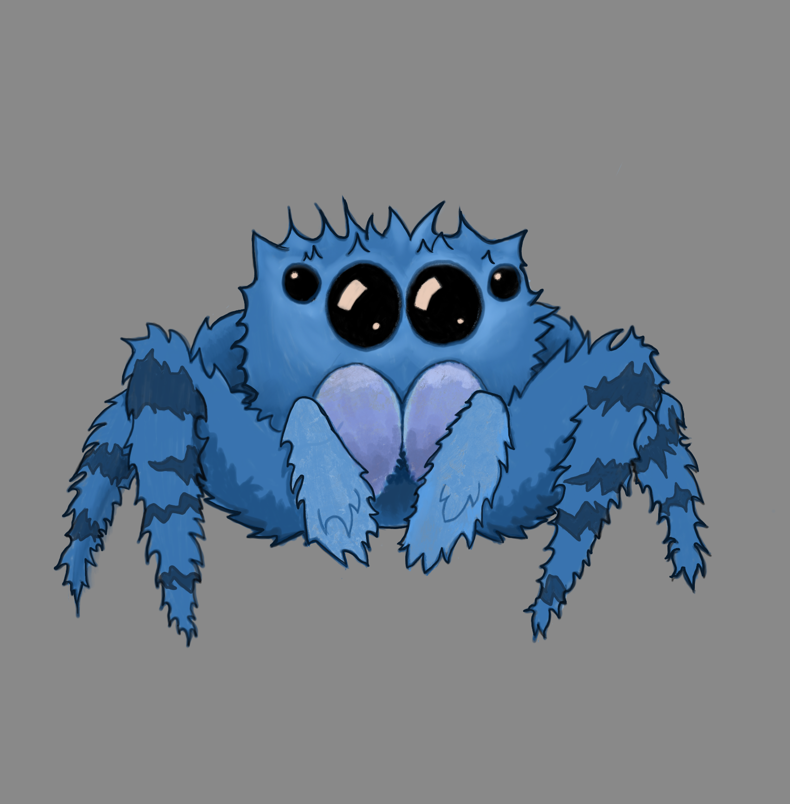

data-management-tool
|  |
Data Management ToolA small, organized, schema management API |
More info here: https://drive.google.com/drive/u/1/folders/1af3onOTX2v7sOIQcTjMO9r3A6XnZx8MW
Elysia with Bun runtime
Getting Started
To get started make sure you have Docker installed. After that's done, spin up the API and Database containers with
./start
Open http://localhost:4000/ with your browser to see the API running.
The API has swagger doc support baked in, check the result at http://localhost:4000/swagger
Adding ENV variables
All Env vars need to be added to .env as well as typed in ./env.ts for type safety.
Setting up a database
Running the start command should spin up an empty postgres database for you.
To apply the prisma/schema.prisma db schema to postgres, run ./bun run db:schema:push
To overwrite the prisma schema with your local db, run ./bun run db:schema:pull
For general prisma help, run ./bun run db:help